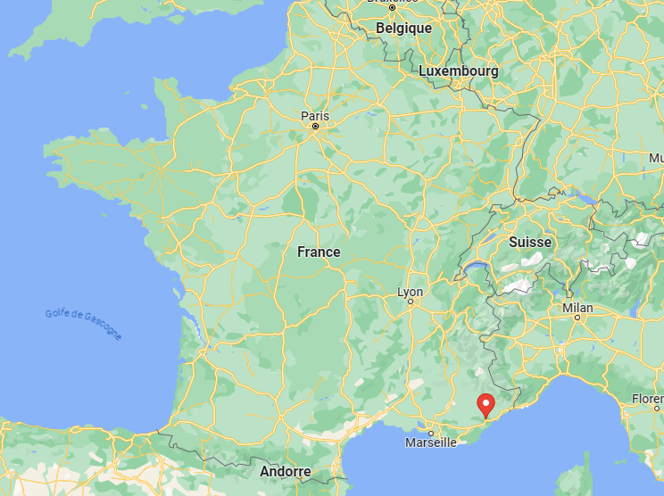
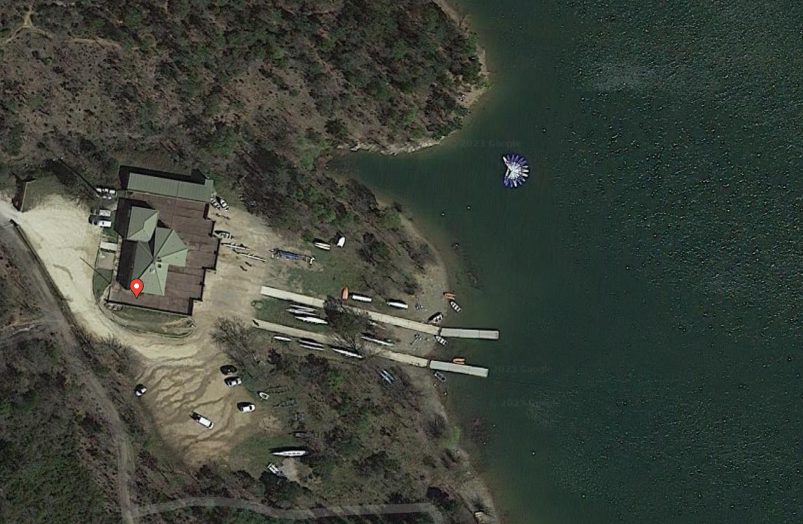
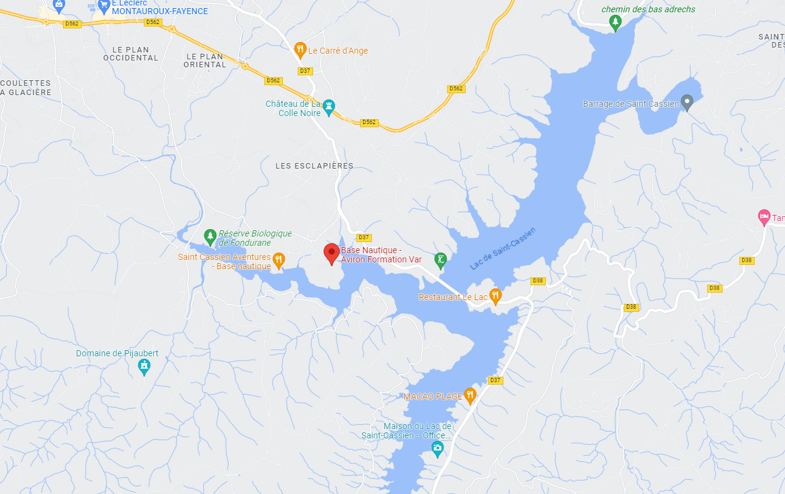

Base d'Aviron
Club d'Aviron
Actualités
Contact & Accès
Information Touristiques
Boutique
Back
Aviron loisirs
Aviron compétition
Aviron scolaire
Saint Cassien International Rowing Center
Le Club d'Aviron
Saint Cassien
Le fichier vidéo ne peut pas être lu
Le fichier vidéo ne peut pas être lu
Le fichier vidéo ne peut pas être lu
  